Inhalt Index DeskTop Bronstein

 Computeralgebrasysteme Graphik in Computeralgebrasystemen Graphik mit Maple Dreidimensionale Graphik
Computeralgebrasysteme Graphik in Computeralgebrasystemen Graphik mit Maple Dreidimensionale Graphik


Der Befehl ist in vier verschiedenen Formen verfügbar:
Alle weiteren Argumente des Operators 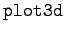 interpretiert Maple als Optionen. Einige wichtige Optionen sind in der folgenden Tabelle dargestellt. Sie sind in der Form zu benutzen.
| 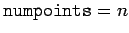 | setzt die minimale Zahl der generierten Punkte (Voreinstellung ist n=625) |
| 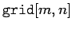 | legt die Dimension des Rechteckgitters fest, auf dem die Punkte generiert werden |
| 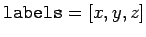 | spezifiziert die Achsenbezeichnungen (string erforderlich) |
| 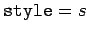 | s ist ein Wert von 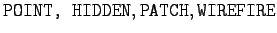. Hiermit wird die Art der Darstellung der Oberfläche festgelegt |
| 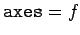 | f kann die Werte 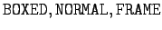 oder NONE annehmen. Hiermit wird die Darstellung der Achsen spezifiziert |
| 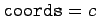 | spezifiziert das zu benutzende Koordinatensystem. Werte sind 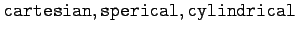. Voreinstellung ist |
| 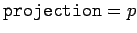 | p nimmt Werte zwischen 0 und 1 an und bestimmt die Betrachtungsperspektive. Voreinstellung ist 1 (orthogonale Projektion) |
| 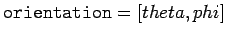 | spezifiziert die Winkel des Raumpunktes im sphärischen Koordinatensystem, von dem aus die Oberfläche betrachtet wird |
| 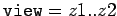 | gibt den Bereich der z-Werte, für die die Oberfläche dargestellt wird. Voreinstellung ist die gesamte Oberfläche |
In der Regel sind fast alle Optionen über die entsprechenden Menüs im Zeichnungsfenster erreichbar und entsprechend einstellbar. Auf diese Weise kann man nachträglich die Anschaulichkeit der darzustellenden Oberfläche wesentlich verbessern.